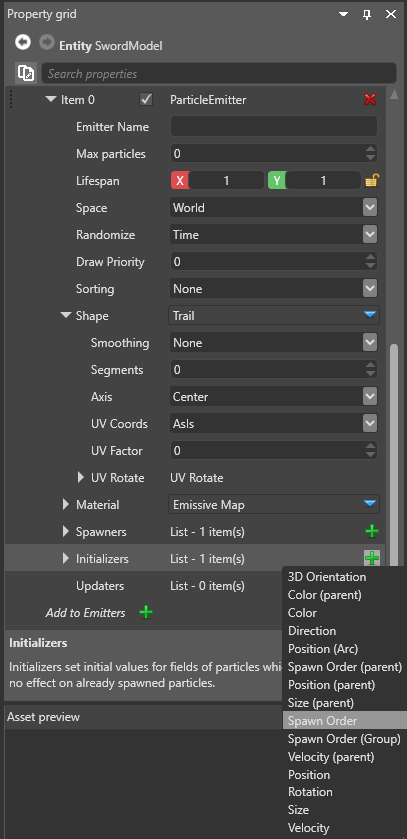

リボンと軌跡
中級 アーティスト プログラマー
リボンと残影を作成するため、Stride は個別のクワッドではなくパーティクルを接続するストリップとしてメッシュ データを作成します。リボンと残影は、剣撃などの視覚効果を作成するためによく使われます。

次の図では、複数のパーティクル (赤いドットとして表されています) が個別のクワッド (青い正方形) としてレンダリングされています。
次の図では、パーティクルを接続し、隣接するパーティクルの間にクワッドをレンダリングすることにより、ストリップが作成されています。

リボンと残影の比較
リボンと残影はどちらも、隣接するパーティクルを直線で接続する軸に沿った平らな表面を生成します。この線は、表面の軸の 1 つを定義します。違いは、リボンが常にカメラの方向を向いているのに対し、残影はそうではないことです。
次の GIF では、異なるカメラ角度から見たときのリボン (赤) と残影 (黄) の動作の違いを示しています。カメラが移動してもリボンは変化しないことに注意してください。リボンは空間内で固定されています。

パーティクルを並べ替える
リボンと残影を作成するには、通常、パーティクルを順番に並べ替える必要があります。パーティクルを並べ替えないと、次の図のように、パーティクルが不規則に接続されます。
これは並べ替えられていないパーティクルが実行時にどのように見えるかの例です。
パーティクルは順番に接続されず、ストリップはパーティクル間を不規則にジャンプします(これは、適切に並べ替えられていないアルファブレンドされたクワッドでの問題と同じです)。
パーティクルを並べ替えるには、［Particle System］>［Source］>［Emitters］で、［Sorting］プロパティを変更します。
パーティクルが同じ有効期間プロパティを持ち、フレームごとに 1 回より多く生成されない場合 (通常は、1 秒あたり 30 パーティクル以下の場合)、パーティクルを存続期間で並べ替えることができます。
一方、1 秒間に複数のパーティクルを生成する場合、またはパーティクルの有効期間が異なる場合は、並べ替えパラメーターがフレーム間で変化するため、存続期間での並べ替えでは一貫した順序になりません。この場合は、順序でパーティクルを並べ替える必要があります。そのためには、生成順序イニシャライザーを追加する必要があります。エンティティのプロパティの［Particle System］>［Source］>［Emitters］で、［Initializers］の隣の  (［Add a new item to the list］) をクリックして、［Spawn Order］を選択します。
(［Add a new item to the list］) をクリックして、［Spawn Order］を選択します。

これにより、生成順序イニシャライザーがエミッターに追加されます。プロパティはありませんが、パーティクルに SpawnID が設定されるので、それを使用して並べ替えることができます。
Note
深度による並べ替えは限られた場合にはうまくいきますが、異なるフレーム間で順序が保持されません。ほとんどの状況では使用しないことをお勧めします。
テクスチャ座標
個別のクワッドであるビルボードとは異なり、リボンと残影にはすべてのパーティクルを通過する単一の表面があります。テクスチャが表面にマップされる方法を定義するには、［Particle System］>［Source］>［Emitters］>［Shape］で［UV Coords］プロパティを変更します。

［AsIs］: テクスチャはセグメントごとにマップされ、すべての 2 つのパーティクルの間に拡大された同じクワッドがコピーされます。これは、パラパラ漫画のアニメーションで役に立つことがあります (マテリアルの設定)。

［Stretched］: テクスチャは、残影またはリボンの最初と最後のパーティクルの間に拡大されます。［UV Factor］は、残影またはリボン全体でテクスチャが表示される回数を定義します (1 = 1 回)。

［DistanceBased］: テクスチャは、パーティクルの数ではなく、リボンまたは残影の実際のワールドの長さに基づいて繰り返されます。［UV Factor］は、テクスチャの 1 回の繰り返しの距離をワールド単位で定義します。
滑らかなリボンと残影
隣り合うパーティクルの間に新しいセグメントを追加して、パーティクル間の線を滑らかにすることができます。そのためには、［Particle System］>［Source］>［Emitters］>［Shape］で［Smoothing］プロパティを変更します。
*［None］- 滑らかにせず、ただ 1 つのセグメントを作成して 2 つのパーティクルを接続します。鋭い角を持つ残影やリボンが作成されます。

*［Fast］- Catmull-Rom 補間 (Wikipedia) を使用して、パーティクルの間に余分なセグメントを追加し、滑らかな効果を作ります。［Segments］プロパティでセグメントの数を設定できます。

*［Best］- 一般に最も滑らかな効果を作りますが、CPU の使用量が増えます。制御軸に沿って並ぶ 3 つのパーティクルのすべての組について外接円を計算し、円上に余分な制御ポイントを追加して、セグメントを円弧内に維持します。最初と最後のセグメントの場合は従う円弧は 1 つだけですが、中間のセクションでは、2 つの異なる円からの 2 つの異なる円弧がオーバーラップします。Stride は最初に 1 番目の円弧から制御ポイントを補間し、ポイントが第 2 のパーティクルに近づいたら 2 番目の円弧から補間します。［Segments］プロパティで 2 つのパーティクル間のセグメントの数を設定できます。

次のビデオは、滑らかにする 3 つの方法の違いを示したものです。右端の残影 (［Best］の方法を使用した場合) がわずかですがより円らしく、剣撃の実際のパスに近くなっています。

サンプル プロジェクト
リボンと残影を使用するプロジェクトの例については、Stride に含まれる Ribbon Particles Sample を試してください。